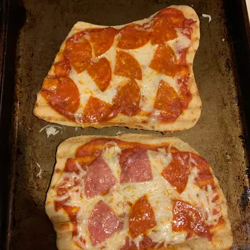

Grilled Pizza
Home

This grilled pizza recipe uses pizza dough made from scratch topped with mozzarella cheese, sauce, and your choice of savory toppings. Grilled to perfection for a fun outdoor treat.
Ingredients
- 3 ½ cups all-purpose flour, or as needed
- 1 envelope Fleischmann's® Pizza Crust Yeast
- 1 tablespoon sugar
- 1 ½ teaspoons salt
- 1 ⅓ cups warm water (120 to 130 degrees F/50 degrees C)
- ⅓ cup oil
- ½ cup pizza sauce, or to taste
- ½ cup shredded mozzarella cheese, or to taste
How to Make Grilled Pizza
- Start a charcoal fire or preheat a gas grill to medium-high heat.
- Combine 2 cups flour, undissolved yeast, sugar, and salt in a large bowl. Add warm water and 1/3 cup oil; mix until well blended, about 1 minute. Gradually add enough flour to make a soft dough that forms a ball and is slightly sticky. Knead on a floured surface, adding additional flour if necessary, until smooth and elastic but not sticky, about 5 minutes.
- Divide dough into 8 portions. Pat or roll dough on a well-floured counter to about 8-inch circles; they do not need to be perfect.
- Brush both sides of crusts with additional oil. Using hands, lift each crust carefully and place on grill. Cook for 3 to 4 minutes until bottoms are lightly browned and tops look set. Using long handled tongs, remove crusts from grill and place on a baking sheet with grilled-sides facing up.
- Lightly add sauce to the top of each grilled crust, then top with mozzarella cheese.
- Carefully slide pizzas back onto the grill. Cook an additional 3 to 4 minutes until bottom crusts are browned and cheese is melted. Remove from the grill and serve immediately.
Source
Grilled Pizza at allrecipes.com